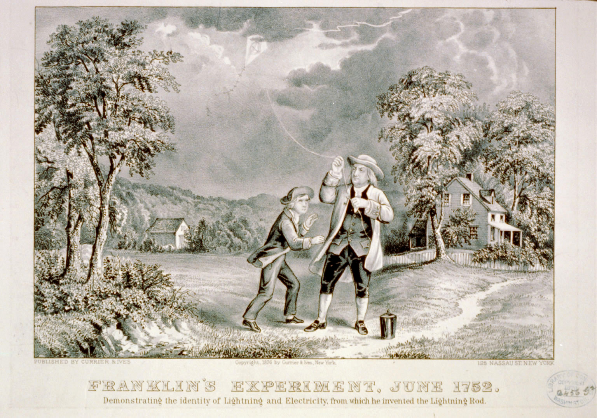
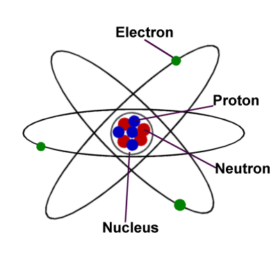

D1.2 Electrical Point Charges#
D1.2.1 Background#
Electric charges were known before the development of field theories. One of the earliest human application using electrical charges may be the Baghdad battery. A later invention was the Leyden jar, which is the precursor to the modern capacitor. One may say that the Leyden jar was the capacitor of the times of Benjamin Franklin. It is difficult to talk about electrical charges without mention good ol’ Ben. Most people have heard about his famous kite experiment. In the wiki description is the mention of a Leyden jar, and the Currier & Ives print below illustrates Franklin and his son performing the experiment. Notice the cannister by Franklin’s foot, which is the Leyden jar.

Another experiment/invention by Franklin involving electrical charges is the Franklin bells, which is a device to demonstrate electrical charge accumulation in the surrounding air and converting stored electrical energy into mechanical energy. This experiment may be most famous through the painting by Mason Chamberlin.
The modern view of charge is a fundamental concept with deep roots in field theory. In fact, it is the charge that is the source of the fields. We have four quantum field theories and four charges associated with these theories:
Gravity Field Theory: mass charge
Electric Field Theory: electric charge
Weak Field Theory: flavor charge
Strong Field Theory: color charge
The mass charge is simply mass in plain language. The flavor and color charges we will discuss later in the course, and we will now focus on the electric charge.
D1.2.2 Electric Point Charge#
In Phase D, we will focus our attention on electric point charges. This choice mirrors the way we previously introduced point particles in Newtonian mechanics. By idealizing charge described through a single location, we can isolate the essential physics without unnecessary geometric complexity.
Definition — Point Charge
A point charge is an idealized electric charge whose size and shape are not important for the dynamics, so that only a single location and total charge matter.
We represent a point charge using the symbol \(q\).
This idealization allows us to develop clear mathematical descriptions of electric forces and, more importantly, electric fields. Just as point particles allowed us to focus on motion without worrying about size or shape, point charges allow us to focus on how charge influences the space around it. In later modules, this idea will be extended to systems of multiple charges and, eventually, to continuous charge distributions.
D1.2.3 The Elementary Charge and Unit of Charge#
The smallest amount of electric charge that can exist is known as the elementary charge. It sets the fundamental scale for all electric charge observed in nature.
Definition — Elementary Charge
The elementary charge, denoted by \(e\), is the magnitude of the smallest electric charge observed in nature:
where the coulomb (C) is the SI unit of electric charge.
The electron is the smallest known particle that carries electric charge and has no measurable size or shape, making it an ideal example of a point charge. The electron therefore has a charge of \(-e\).
Because atoms are electrically neutral overall, the proton must carry an equal and opposite charge of \(+e\). By convention, protons carry positive charge and electrons carry negative charge, both with the same magnitude \(e\).

D1.2.4 Experimental Properties of Electrical Charges#
Two types exist: positive and negative (these terms were named by Benjamin Franklin).
Like charges repel and unlike charges attract one another.
Charge is a conserved quantity.
All non-elementary particles have electrical charge in multiple of \(e\).
Some elementary particles, like quarks, have electrical charge in fractions of \(e\).
Although quarks have fractional charge of \(e\), they do not appear naturally (or free) in nature but always come in sets that make up integer multiple charge of \(e\).
Example — Counting Electrons from Net Charge
Observation
A large tank capacitor used in a Tesla coil can store a significant amount of electric charge. In this case, the capacitor is measured to have a net charge of (magnitude)
Such a macroscopic amount of charge must arise from an imbalance of microscopic charge carriers.
Question
If the excess charge is due entirely to electrons, how many additional electrons are present on the capacitor compared to its neutral state?
Hypothesis
The number of excess electrons can be found by dividing the total charge by the magnitude of the elementary charge.
Analysis
The magnitude of the elementary charge is
The number of excess electrons \(N\) is related to the total charge by
Solving for \(N\),
Substituting the given value of the charge,
Conclusion
Approximately
extra electrons are placed on the capacitor relative to its neutral state.
This example highlights how a seemingly large macroscopic charge corresponds to an enormous number of elementary charges, reinforcing the idea that electric charge is quantized and carried by discrete particles.
Example — Charge Conservation in Nuclear β⁻ Decay
Observation
Certain unstable nuclei undergo beta decay, transforming into a different nucleus while emitting additional particles. One such process is the β⁻ decay of carbon-14, written as
Here, \(\bar{\nu}\) denotes an antineutrino (which carries no electric charge), and \(X\) is an unknown particle.
Question
What must the electric charge of the unknown particle \(X\) be in order for electric charge to be conserved?
Hypothesis
The particle \(X\) must carry a charge of \(-e\).
This hypothesis follows directly from the principle of charge conservation.
Reasoning / Analysis
The initial carbon-14 atom is electrically neutral.
Electric charge must be conserved in all physical processes, including nuclear reactions.
The nitrogen-14 nucleus has one more proton than the carbon-14 nucleus.
This means the right-hand side of the reaction has one extra unit of positive charge unless it is balanced by another particle.
To maintain overall charge neutrality, the unknown particle \(X\) must therefore carry a charge of \(-e\).
Conclusion
The particle \(X\) must be an electron, and the antineutrino is specifically an anti-electron neutrino, \(\bar{\nu}_e\). This decay can be understood as a neutron inside the nucleus transforming into a proton while emitting an electron and an antineutrino.
This example illustrates a key idea that will recur throughout electromagnetism and modern physics:
electric charge is always conserved, even in processes that involve fundamentally different interactions.
Box Activity 1 — Quantization of Charge with Real Numbers
A small metal sphere is given a net electric charge of
You are told that this charge imbalance is caused entirely by electrons being added to or removed from the sphere.
Work through the following steps:
Observation
The sphere carries a measurable macroscopic charge, yet charge is known to be carried by microscopic particles.Question
How many electrons must be responsible for this net charge?Hypothesis
Assume that electric charge is quantized and occurs only in integer multiples of the elementary charge \(e\).Calculation
Use the relationship\[ Q = N(-e) \]where \(N\) is the number of excess electrons and
\[ e = 1.602176634\times10^{-19}\,\mathrm{C}. \]Analysis
Solve for \(N\).
Interpret the sign of \(Q\).
Conclusion
State how many electrons are involved and explain what this tells you about charge at the microscopic level.
A Possible Solution Guide
4. Calculation
The number of electrons is
5. Analysis
The negative sign of \(Q\) indicates an excess of electrons, not a deficit.
Although \(4.8\times10^{-7}\,\mathrm{C}\) is a small macroscopic charge, it corresponds to trillions of electrons.
Charge does not vary continuously—it changes in discrete steps of size \(e\).
6. Conclusion
Approximately
extra electrons are present on the sphere.
This activity reinforces a key idea of electrostatics:
macroscopic electric charge is the cumulative effect of enormous numbers of discrete elementary charges.
# DIY Cell